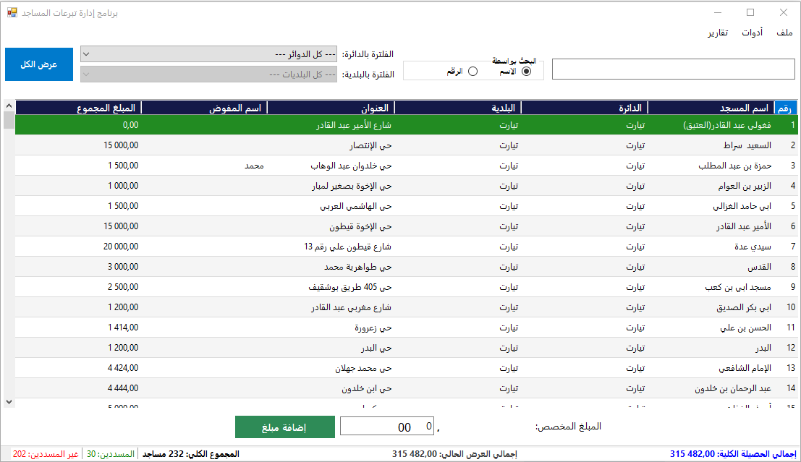
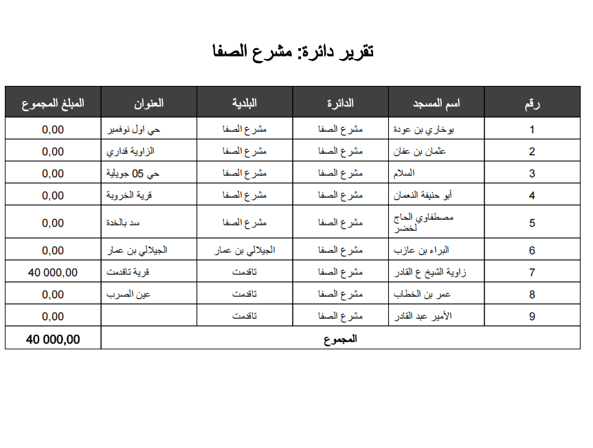
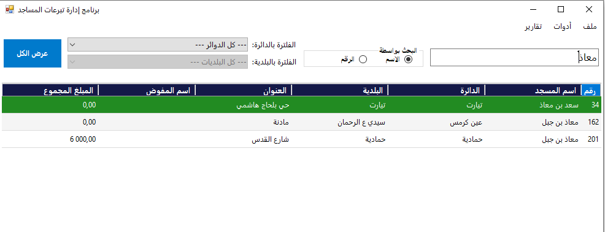
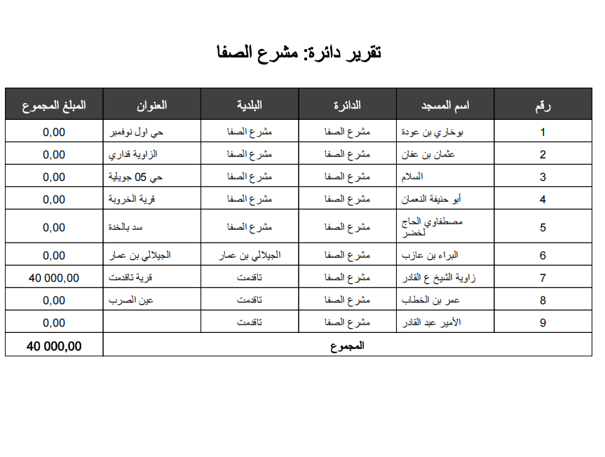
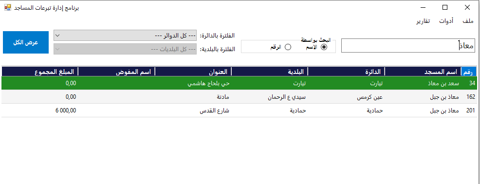

برنامج مسجد: الإدارة المتكاملة للمساجد والتبرعات
أداة سطح مكتب بسيطة وقوية لتنظيم بيانات المساجد، متابعة التبرعات، وإصدار التقارير الاحترافية بضغطة زر.

أداة سطح مكتب بسيطة وقوية لتنظيم بيانات المساجد، متابعة التبرعات، وإصدار التقارير الاحترافية بضغطة زر.
سجل جميع مساجد منطقتك في قاعدة بيانات SQLite محلية، مع سهولة البحث والتصفية بالاسم، الدائرة، أو البلدية.
أنشئ تقارير PDF مفصلة لكل دائرة على حدة، أو تقريراً شاملاً لجميع الدوائر، جاهزة للطباعة والمشاركة.
احصل على نظرة شاملة وفورية على إحصائيات التبرعات ونسب السداد من خلال المخططات البيانية التفاعلية.
 


